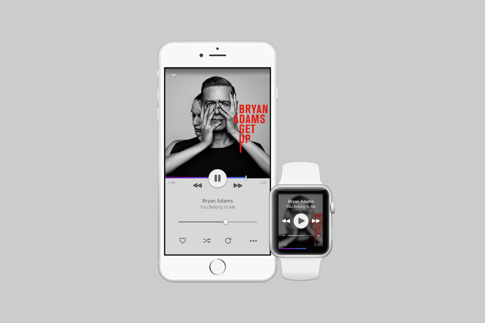
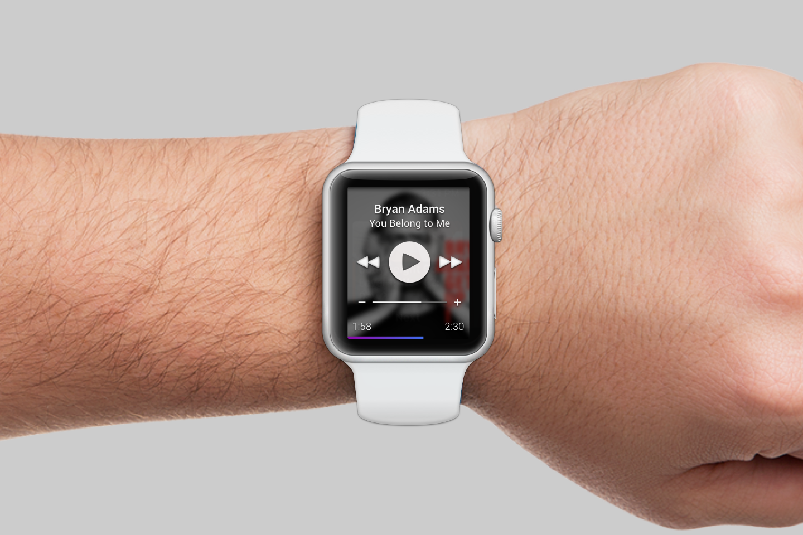
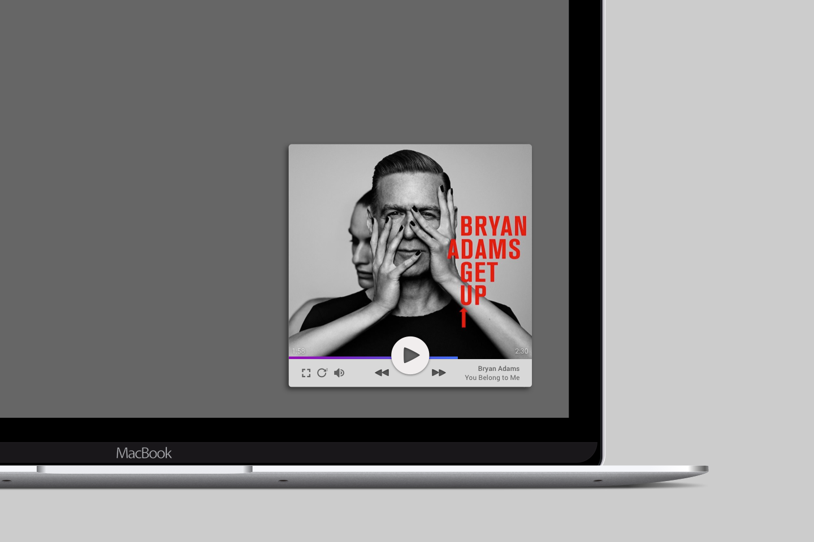

Music App
UI Design
This project was born from a frustration with music player UI's.
At the time, Apple Music had just been launched and having switched between services a number of times, I felt they all were not quiet right.
I designed the music player interface to be simple and easy to use. All of the controls that I used the most are visual, not hidden in sub-menus, and overall UI is unobtrusive, allowing the album artwork to take pride of place.
The addition of subtle animations and interactions made this simple interface delight and come alive.


